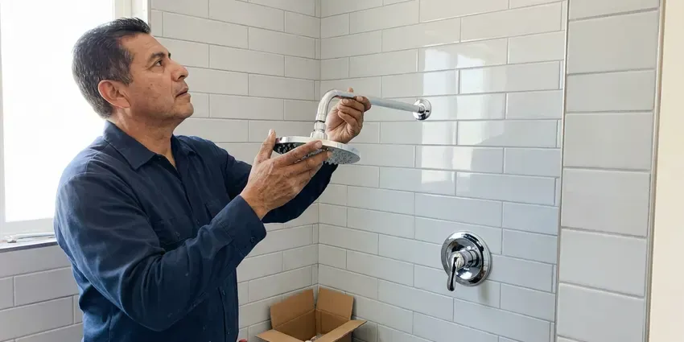

Toilet Repair in Rockford, IL
Dealing with a leaking or clogged toilet in Rockford, IL? HVM Plumbing provides prompt, professional toilet repair services.
- Fill and Flush Valves On Hand
- Licensed Plumbers
- Fast, Local Service
- Guaranteed Workmanship

Stop the Running, Leaking and Phantom Flushing in Rockford, IL.
We handle everything from minor repairs to major overhauls, ensuring your toilet functions properly.
Dependable Toilet Repair Solutions for Rockford, IL Homeowners
HVM Plumbing specializes in all types of toilet repair across Rockford, IL. From phantom flushes to persistent clogs, our experienced plumbers diagnose and fix issues using quality parts and proven techniques.
Our expertise includes:
- Diagnosing and fixing phantom flushes
- Wax ring and closet flange repairs for leaks at the base
- Replacing faulty flush valves and fill valves

Additional Bathroom Plumbing Services in Rockford, IL
From toilets to showers, our bathroom plumbing team in Rockford, IL repairs, installs, and replaces every fixture with clean, code-compliant work.




Rockford shower installation specialists

Customers
Why Choose HVM Plumbing for Toilet Repair in Rockford, IL?
We focus on effective solutions that prevent future problems, saving you time and money on repeated service calls. Our commitment to quality ensures your toilet repair is done right the first time.
- Leak Testing, We dye-test the tank and check the base so silent leaks do not get missed.
- Transparent Pricing, You'll always receive a clear, upfront estimate before any work begins.
- Parts On Hand, We carry fill valves, flappers, flush valves, seals and supply lines for most common toilets.
Citywide Coverage
We repair toilets in every part of Rockford, from older homes to newer subdivisions. Our plumbers keep routes tight so a running or leaking toilet does not have to wait long for attention.
Experienced Team
Our plumbing team has extensive experience specifically with toilet repair, handling everything from common fill valve issues to complex drain line blockages. They are trained on various toilet models and brands.
Safety-First Approach
We shut off water at the angle stop and protect your floors before any repair begins. If we find a rotted subfloor or a broken flange, we show you before going further.
Trusted Certified Rockford Plumbing Services Professionals
At HVM Plumbing, we take pride in providing certified plumbing services throughout Rockford, IL. Backed by recognized industry credentials, our experienced plumbers combine technical skill with genuine customer care. Whether it is repair, installation, or maintenance, we follow strict safety and quality standards to deliver long-lasting results you can trust.
Call Us Now PHCC Plumbing Contractor Recognition
PHCC Plumbing Contractor Recognition Better Business Bureau (BBB) Accreditation
Better Business Bureau (BBB) Accreditation Angi Certified Pro
Angi Certified Pro ISO 9001 Quality Management Certification
ISO 9001 Quality Management CertificationDependable Toilet Repair Services in Rockford, IL
Weak Flush and Clog Repair in Rockford, IL
If your toilet needs two flushes or clogs often, the problem could be scale in the rim jets, a partial blockage in the trapway or a flush valve that does not open fully. We auger the trap, check the vent if gurgling is present and clean the jets with a descaling treatment. Some low-flow toilets from the 1990s simply flush poorly, and we will tell you honestly if replacement is the better fix.

Fill Valve Replacement in Rockford
A noisy, slow or hissing tank often points to a worn fill valve. Mineral scale clogs the small ports inside, which causes long refill times and phantom refills in the night. We replace old ballcock valves with modern adjustable fill valves from Fluidmaster or Korky and set the water level to the manufacturer mark. The job takes about 20 minutes and makes an older toilet much quieter.
Brands We Service in Rockford, IL
HVM Plumbing is proficient in repairing toilets from all leading manufacturers commonly found in Rockford, IL homes and businesses. This includes popular brands like Kohler, American Standard, Toto, Delta, Eljer, and Gerber. Our plumbers are familiar with the specific designs and proprietary parts of these brands, allowing for accurate diagnosis and fast repair. We stock a wide range of common replacement parts to ensure that most repairs can be completed on the first visit, regardless of your toilet's brand or model.
Running Toilet Fixes in Rockford
A toilet that continually runs or refills itself intermittently is not only annoying but also a major water waste. This issue in Rockford is typically caused by a faulty flapper valve, an improperly adjusted float, a worn-out fill valve, or sediment buildup. Our technicians diagnose the specific component causing the problem and replace it with high-quality, long-lasting parts. We ensure proper alignment and adjustment of all internal mechanisms to restore your toilet's efficient operation and stop wasted water consumption.
Toilet Gasket and Seal Replacement in Rockford, IL
The gaskets and seals within your toilet tank and at its base are crucial for preventing leaks. Over time, these rubber components can degrade, crack, or become brittle due to age and exposure to water, especially where the water is hard. We focus on replacing worn-out flapper seals, tank-to-bowl gaskets, and the wax ring at the toilet's base, which is essential for preventing leaks onto your bathroom floor and maintaining a watertight seal.
Commercial Toilet Repair in Rockford
Commercial toilets often endure heavier use and require specialized parts and expertise for repair. HVM Plumbing offers comprehensive toilet repair services for businesses and commercial properties throughout Rockford. We understand the importance of minimizing downtime for your restrooms and provide fast, durable repairs for flushometer toilets, low-flow models, and standard commercial units, ensuring your business operations run smoothly.
Toilet Flush Mechanism Repair in Rockford, IL
If your toilet isn't flushing properly, it could be due to issues with the flush chain, handle, flapper, or fill valve. A weak flush might mean the tank isn't filling correctly, while a loose handle might not be engaging the flapper. Our plumbers are skilled at diagnosing these internal tank problems, replacing worn or broken components like flush valves, fill valves, and toilet handles to restore full and effective flushing power.

Cracked Tank and Supply Line Repair in Rockford, IL
A hairline crack in the tank or a bulging braided supply line can let go without warning and flood a bathroom. We inspect the tank, tank-to-bowl bolts and gasket, and the supply line on every visit. If the porcelain is cracked we will price a replacement tank or new toilet, and we upgrade old plastic or vinyl supply lines to braided stainless.
Toilet Repair Near Me in Rockford, IL
When you search for 'toilet repair near me' in Rockford, IL, you want a local, reliable plumber who can arrive quickly. HVM Plumbing is your community's trusted plumbing service, with technicians positioned to provide fast response times.
We answer the phone live and give you a time window you can count on. Our plumbers explain what failed and why before they start. You only pay the price you approved.
HVM Plumbing at a Glance
- Licensed and insured plumbers serving Rockford, IL
- Same-day appointments and 24/7 emergency response
- Clear written estimates, no hidden fees
- 4.8-star rated by 528+ Illinois customers
Rockford Map
Rockford Information
- Population
- 146,120
- Area codes
- 815/779/608
- Service area
- Rockford and communities within 40 miles
- Nearby
- Elgin, Hoffman Estates, Round Lake Beach, Aurora
Around Rockford, fast temperature swings in spring and fall can loosen joints and fittings, especially in older homes with mixed pipe materials. For homes in Rockford, IL, a toilet leak that goes unnoticed can raise indoor humidity, soften the subfloor and promote mold growth.
Expert Services
Trust our professionals for reliable HVM Plumbing solutions in Rockford, IL.
Our Specialized Plumbing Services in Rockford, IL
At HVM Plumbing, we provide a complete range of plumbing services across Rockford, IL. From leak detection to full system installations, our team ensures fast, precise, and affordable service for both residential and commercial properties. Explore our core services below:


How Our Toilet Repair Process Works in Rockford, IL
We follow a simple, step-by-step approach to ensure your toilet repair in Rockford, IL is handled professionally and effectively.
Request a Quote
Call (773) 903-7643 and describe what your toilet is doing, such as running, leaking or clogging. We give you a time window and a price range before we arrive.
Diagnose and Price
Your plumber tests the tank, valves, seal and supply line to find the real cause. You get a flat price to approve before work begins.
Repair and Test
We install the new parts, adjust the water level and flush several times to confirm a clean, complete cycle. We dye-test the tank and check the base before we go.
Frequently Asked Questions About Toilet Repair in Rockford
The cost of toilet repair in Rockford, IL can vary widely depending on the issue. Minor repairs like replacing a flapper might range from $120 to $250, while more complex issues such as main drain clogs or wax ring replacements could be between $200 and $500. We provide a clear, upfront estimate after diagnosing the problem.
Common signs include a toilet that runs constantly, a weak or incomplete flush, water leaking around the base, a rocking or unstable bowl, or a visible crack in the porcelain. Any unusual noises, like gurgling or whistling, can also indicate an internal issue that needs attention.
While some minor running toilet issues, like a simple flapper adjustment, can be DIY, more complex problems might require a professional. If you're unsure about the cause, or if the issue persists after basic troubleshooting, calling HVM Plumbing ensures an accurate diagnosis and lasting repair, preventing potential water waste or damage.
If your toilet is overflowing, immediately reach behind the toilet and turn the small valve on the water supply line clockwise to shut off the water. This will stop the water from continuously filling the bowl. Then, try to clear any visible blockage with a plunger and call a licensed plumber like HVM Plumbing for assistance.
While some minor issues like a simple flapper replacement can be a DIY fix, many toilet repairs, especially those involving the internal mechanisms, drain lines, or significant leaks, are best left to professionals. Improper repairs can lead to greater damage, water leaks, or code violations.
Repeated toilet clogs can be caused by a range of factors. These include flushing non-biodegradable items, excessive use of toilet paper, a low-flow toilet design that struggles with waste volume, or more serious issues like a partially blocked drain line, tree root intrusion in the sewer line, or even a damaged or improperly vented main stack.
We service all major toilet brands, including but not limited to American Standard, Kohler, Toto, Delta, Gerber, and Mansfield. Our plumbers are equipped with a wide range of common replacement parts and have experience with various models and flush systems.
The most common causes are a worn flapper, a mineral-crusted flush valve seat or a fill valve set too high so water spills into the overflow tube. A chain that is too short can also hold the flapper open. A quick inspection typically pinpoints the cause in minutes.
What People Are Saying About Our Plumbing Experts?

Robert G.
The trenchless sewer replacement saved our front yard. They walked us through the camera inspection footage first so we knew exactly what we were paying for.
Sewer Line Replacement · Aurora, IL
Mark T.
When our office needed drain cleaning, HVM Plumbing provided quick, reliable service. The plumber arrived on time and made sure every drain flowed perfectly before leaving. Very satisfied.
Drain Cleaning · Rockford, IL
Laura S.
I scheduled a water heater replacement, and the team made the process smooth and affordable. The new unit works perfectly, and they cleaned up after completing the job.
Water Heater Replacement · Hoffman Estates, IL
Daniel K.
A pipe burst at 11 pm and they actually answered. The plumber showed up within the hour, shut everything down, and had us back to normal the next morning. Could not ask for more.
Emergency Plumbing · Hoffman Estates, ILSofia M.
Two new toilets installed in one visit, no mess left behind, and the tech even adjusted a faucet he noticed was dripping. Fair pricing and really friendly.
Toilet Installation · Aurora, ILJames P.
Our commercial plumbing system had a leak under the sink, and HVM Plumbing handled it professionally. The plumbers arrived quickly and restored everything without disruption to our customers.
Commercial Plumbing · Elgin, IL